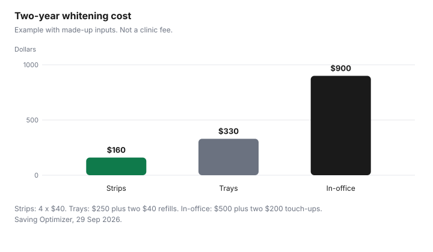

Personal Care · Canada
Teeth Whitening Costs in Canada: Strips, Trays and In-Office (Products Focus)
Whitening is sold as a shade. The bill is the product or the visit, plus whatever you buy to keep the shade, plus the rules that say what the product is allowed to be. This page is products and prices on made-up inputs. It is not a comparison of clinical results, and it is not dental advice. Cleaning between teeth is the floss guide. What a dental visit should cost, and what to ask for on a quote, is the dental work guide. A federal plan’s exclusions are summarized below and spelled out on the Canadian Dental Care Plan guide.
Disclosure: Amazon.ca storefronts are an offer type. Saving Optimizer may earn a commission if a partner link is added later. No partnership is claimed with Amazon, a salon, a clinic, or a brand. Education only. This page does not name a best product.
Key takeaways
- No toothpaste, strip, tray, or in-office fee is quoted from a store or a clinic. The two-year chart is an example with made-up inputs.
- Peroxide whitening cosmetics need a pH of at least 4.0. Above 3 percent hydrogen peroxide equivalent, Health Canada asks for a salivary-peroxide study. Ten percent carbamide peroxide is about 3 percent hydrogen peroxide, on that page.
- The label cautions include stopping if the mouth is irritated, not using peroxide products under age 12, and asking an oral health professional before prolonged use.
- The CDCP benefits guide, effective 1 April 2026, excludes cosmetic treatment, including teeth whitening.
- A DIN on the box is a drug. Search the Drug Product Database. This page does not pick a product.
Product types and costs
Four products show up in the aisle and in the chair: a whitening toothpaste, strips, take-home trays, and an in-office session. This page does not cite a shelf price or a dentist’s fee for any of them. Write the price in front of you, the count of treatments in the box, and whether a second box is required for the routine the directions describe. A toothpaste used every day is a year of tubes. Strips are a box, then another box when you repeat. Trays are a first kit plus gel refills. An in-office visit is the fee you were quoted, plus the touch-up the dentist described, which may be another visit or a take-home product.
Example with made-up inputs, for the chart only. Strips at $40, bought four times over two years, are $160. Take-home trays at $250 plus two refills at $40 are $330. An in-office visit at $500 plus two touch-ups at $200 are $900. None of those is a brand or a city. Replacement toothbrush heads, which are a different two-year bill, are the toothbrush head guide. Store-brand toothpaste is a label comparison on the toiletries guide, including a DIN or NPN if one is printed.
Peroxide levels and Canadian rules
Health Canada’s page on evidence of safety for tooth-whitening products that contain peroxide, checked 29 Sep 2026, is written for notifiers of cosmetics. Section 13 of the Cosmetic Regulations, as that page states it, requires the acidity of tooth-whitening products to be a pH greater than or equal to 4.0, measured as applied to the teeth. For peroxide, the page says notifiers must give the exact concentration. If an oral cosmetic contains more than 3 percent hydrogen peroxide or the equivalent, notifiers must submit a clinical study showing salivary peroxide levels do not exceed 3 percent during use as directed. The page’s own conversion example: 10 percent carbamide peroxide, also called urea peroxide, is approximately 3 percent hydrogen peroxide.
The same page’s caution statements, to the effect of the words it prints, include: stop and consult an oral health professional if irritation such as redness, swelling, or soreness of the gums or mouth occurs. Products containing peroxides are not recommended for children under 12. Consult an oral health professional before prolonged use. Avoid swallowing the cosmetic. Avoid contact with the eye. Avoid direct contact of the active surface with the gums or salivary flow. Health Canada’s cosmetics page says a cosmetic notification informs the department that a product is being sold. It does not, on that page, turn the notification into a drug licence. If the package prints a DIN, search the Drug Product Database, checked 29 Sep 2026. This page does not look up a brand.
Sensitivity
The evidence page says peroxides can reduce stain, and that exposure of the mouth to high concentrations may cause tooth sensitivity and gingival irritation. It says those effects have generally been observed with products containing greater than 3 percent weight-for-weight total peroxide, and it points to the papers it cites for that sentence. Concentration, how often you use the product, and how long each session lasts are factors the page names. That is a regulator’s summary, not a prediction for your teeth.
If your teeth are already sensitive, the practical step on this page is to ask your dentist before you start, and to follow the stop-and-consult line if irritation shows up. Do not “push through” a labelled warning to finish a box you already paid for. The dental guide is the place for a conversation about what else might be going on. This article is not dental advice, and it does not say a whitening product is safe for sensitive teeth.
Maintenance
A first result that fades is a second purchase. This page does not cite a number of months a shade lasts. The Canadian Dental Association’s public brushing and flossing page, checked 29 Sep 2026, does not rank whitening products or state a wear time for a shade. Maintenance math is whatever you buy again. In the example, the strip buyer purchases four boxes over two years, and the in-office example adds two touch-ups. If your dentist says the touch-up is a different product, use that price, not the $200 placeholder.
Daily cleaning still happens. Brushing at least twice a day and flossing daily, and the fact that skipping floss misses more than a third of the tooth surface, are on the CDA flossing page and on the floss guide. Whitening does not replace that. A whitening toothpaste you count as both your cleaner and your whitener should be priced once, in one column, not twice.
When to ask your dentist (link Healthcare)
Ask before you whiten if you have sensitive teeth, dental work you can see, or you are not sure a product belongs in your mouth. Ask what the in-office fee includes and what the touch-up costs. The dental work guide is how to read a quote. The Canadian Dental Care Plan guide is who the federal plan is for. The Dental Benefits Guide, effective 1 April 2026, checked 29 Sep 2026, says Appendix E exclusions are always outside the plan. The list includes cosmetic treatment, including teeth whitening. That exclusion is not a comment on whether whitening works. It is a coverage line.
An employer plan is a contract. The paramedical benefits guide is maximums and receipts. It does not, and this page does not, say a private plan pays for whitening. Read the booklet. A medical expense claim for whitening is the medical expense guide, where whitening is on the CRA’s not-eligible examples. Confirm the year’s list with the CRA. This is not tax advice.
| Option | Cost drivers | How Canada regulates it | Ask your dentist |
|---|---|---|---|
| Whitening toothpaste | Tubes per year. A DIN or NPN if printed. | If it is a peroxide cosmetic, the peroxide rules below can apply. A DIN is a drug search. | Whether it is enough for what you want, or only a polish. |
| Strips | Boxes, and how many the directions use. Repeats. | pH at least 4.0. Above 3 percent hydrogen peroxide equivalent, a salivary study is required of the notifier. | Sensitivity, and whether strips suit your dental work. |
| Take-home trays | Kit plus refills. No fee quoted. | Same peroxide and pH rules if it is a cosmetic. Not for children under 12, on the peroxide caution. | Fit of the tray, and how long you should wear it. |
| In-office | The quote, plus touch-ups. No fee quoted. | A clinical service is not a cosmetic notification. The product used may still be a cosmetic or a drug. Ask what it is. | The fee, the touch-up, and whether your plan excludes whitening. |
| Plan | Made-up arithmetic | Two years | Your price |
|---|---|---|---|
| Strips | 4 × $40 | $160 | |
| Take-home trays | $250 + 2 × $40 | $330 | |
| In-office plus touch-ups | $500 + 2 × $200 | $900 |

Sources & date stamps
- Health Canada, Evidence of safety requirements for tooth whitening products containing peroxide and peroxide-generating compounds, checked 29 Sep 2026. pH at least 4.0. Above 3 percent hydrogen peroxide or equivalent, a clinical study that salivary peroxide stays at or below 3 percent. Ten percent carbamide peroxide is about 3 percent hydrogen peroxide. Cautions on irritation, age under 12, prolonged use, swallowing, eyes, and gums.
- Health Canada, Cosmetic safety, page details 2025-12-29, checked 29 Sep 2026. Cosmetic definition includes teeth. A notification informs Health Canada that a cosmetic is being sold. Claims must not mislead.
- Health Canada, Drug Product Database, checked 29 Sep 2026. Search by DIN. No product is named.
- Canadian Dental Association, Flossing and brushing, checked 29 Sep 2026. Brushing at least twice a day and flossing daily. No whitening comparison and no shade-duration on that page.
- Canadian Dental Care Plan, Dental Benefits Guide, effective 1 April 2026, checked 29 Sep 2026. Appendix E excludes cosmetic treatment, including teeth whitening.
- Two-year dollars are an example with made-up inputs.
Frequently asked questions
Do whitening strips work as well as the dentist?
This page does not say they do. The Canadian Dental Association pages checked on 29 Sep 2026 cover brushing and flossing, and they are not a comparison of strips and an in-office visit. Ask your dentist before you treat a box as the same service. Cost is a different question, and the two-year chart is an example with made-up inputs.
How are whitening products regulated in Canada?
Health Canada’s evidence page for peroxide tooth-whitening cosmetics says the product pH, as applied, must be at least 4.0, and if the product is more than 3 percent hydrogen peroxide, or the equivalent, the notifier must submit a clinical study showing salivary peroxide does not exceed 3 percent during use as directed. The page’s example: 10 percent carbamide peroxide is about 3 percent hydrogen peroxide. A box with a DIN is a drug, so search that number. This page names no brand.
Is whitening safe for sensitive teeth?
Health Canada’s evidence page says high peroxide exposure may cause tooth sensitivity and gum irritation, and that those effects have been seen with products over 3 percent total peroxide. The hotlist wording on that page says to stop if the gums or mouth are irritated and to consult an oral health professional, including before prolonged use, and products with peroxides are not recommended for children under 12. This is not dental advice. Ask your dentist.
Does dental insurance cover whitening?
The Canadian Dental Care Plan Dental Benefits Guide, effective 1 April 2026, lists cosmetic treatment, including teeth whitening, as an exclusion. That is the federal plan’s list, not your employer booklet. Read the booklet, and use the paramedical guide for how maximums and receipts work. A dentist’s whitening invoice is not proof a plan will pay it.
How long do results last?
This page does not cite a shade-duration from the Canadian Dental Association or from Health Canada. Maintenance cost is the strips, gel, or visit you buy again. In the example with made-up inputs, strips are repurchased over two years and an in-office visit has two touch-ups. Your dentist is the person who can say what to expect for your teeth, and this is not a forecast.